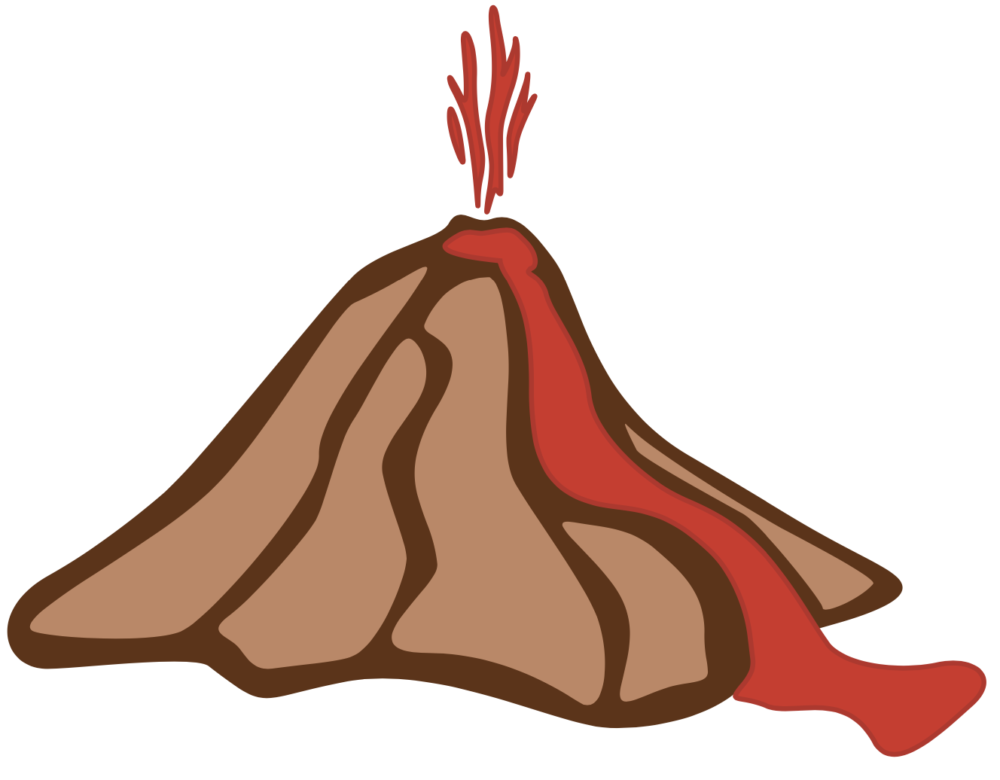
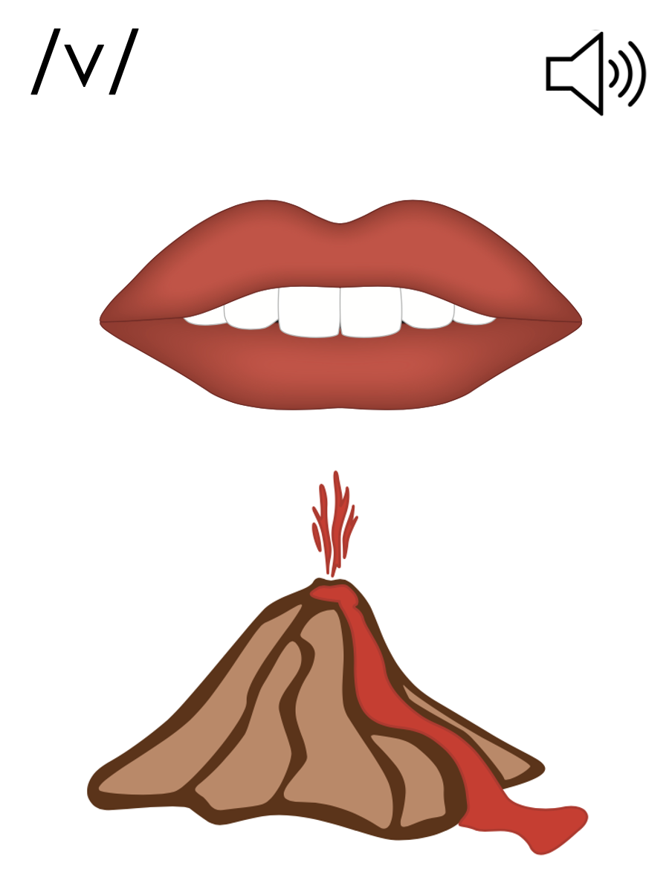
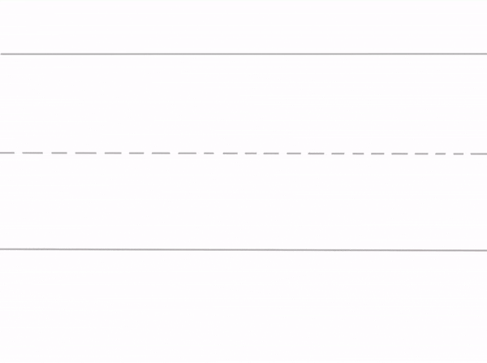
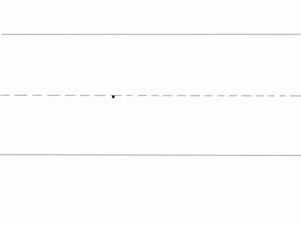

Lesson 33
v /v/

ufliteracy.org


Lesson 33
v /v/


See UFLI Foundations lesson plan Step 1 for phonemic awareness activity.


See UFLI Foundations lesson plan Step 2 for student phoneme responses.


qu
x
y
j
w
l
r
h
k
s
e
b
g
u
c
d
o
n
i
f


See UFLI Foundations lesson plan Step 3 for auditory drill activity.

No slides needed for auditory drill.


See UFLI Foundations lesson plan Step 4 for blending drill word chain and grid.
Visit ufliteracy.org to access the Blending Board app.


See UFLI Foundations lesson plan Step 5 for recommended teacher language and activities to introduce the new concept.
v

beginning
middle
end
van
vet
v

v



Uppercase V gif

Lowercase v gif

van
vest

vat
vet
vent
vend
vest

See UFLI Foundations lesson plan Step 5 for words to spell.
Handwriting paper to model spelling.

See UFLI Foundations lesson plan Step 5 for words to spell.
Handwriting paper for guided spelling practice.


Insert brief reinforcement activity and/or transition to next part of reading block.

Lesson 33
v /v/

New Concept Review

See UFLI Foundations lesson plan Step 5 for recommended teacher language and activities to review the new concept.
v
beginning
middle
end
van
vet
v
v
Lowercase v gif
vet
van
vest
vent


See UFLI Foundations lesson plan Step 6 for word work activity.
Visit ufliteracy.org to access the Word Work Mat apps.


See UFLI Foundations lesson plan Step 7 for irregular word activities.
The white rectangle under each word may be used in editing mode. Cover the heart and square icons then reveal them one at a time during instruction.

See UFLI Foundations manual for more information about reviewing irregular words.

are
Lessons 27-76
AR /ar/ has not been introduced yet.
The final E is silent but does not follow the long vowel VCe pattern.
The white rectangle under the word may be used in editing mode. Cover the heart and square icons then reveal them one at a time during instruction.
was
Lesson 29+
A represents the /ŏ/ sound.
S /z/ has already been introduced.
The white rectangle under the word may be used in editing mode. Cover the heart and square icons then reveal them one at a time during instruction.
you
Lessons 31-114
*Temporarily irregular
OU /ū/ has not been introduced yet.
The white rectangle under the word may be used in editing mode. Cover the heart and square icons then reveal them one at a time during instruction.
Handwriting paper for irregular word spelling practice. Use as needed.
See UFLI Foundations manual for more information about reviewing irregular words.
Teach
The orange star indicates these are new irregular words that need to be introduced.
See UFLI Foundations manual for more information about teaching irregular words.
what
Lessons 33-49
WH /w/ has not been introduced yet.
A represents the /ŭ/ sound or the /ŏ/ sound, depending on dialect.
The white rectangle under the word may be used in editing mode. Cover the heart and square icons then reveal them one at a time during instruction.
have
Lessons 33-61
*Temporarily irregular
The final E is silent but does not follow the long vowel VCe pattern.
The silent E is there because English words can not end with the letter V.
The white rectangle under the word may be used in editing mode. Cover the heart and square icons then reveal them one at a time during instruction.

Handwriting paper for irregular word spelling practice. Use as needed.
See UFLI Foundations manual for more information about teaching irregular words.


See UFLI Foundations lesson plan Step 8 for connected text activities.
The dog was at the vet.
Did Vic have his vest on?
What did you and Vin get?
See UFLI Foundations lesson plan Step 8 for sentences to write.

The UFLI Foundations decodable text is provided here. See UFLI Foundations decodable text guide for additional text options.
What is a Vet?
What can vets do?
Vets help pets.
Can a vet help a dog?
Yes, a vet can help a dog.
Can a vet help a cat?
Yes, a vet can help lots of pets.
Can a vet help kids?
No, a vet can not help kids.
Vets just help pets.
Vets have a fun job.

Insert brief reinforcement activity and/or transition to next part of reading block.